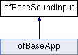

This documentation is automatically generated from the openFrameworks source code using doxygen and refers to the most recent release, version 0.11.1.
ofBaseSoundInput Class Reference
A base class representing a sound input stream. More...
#include <ofSoundBaseTypes.h>
Inheritance diagram for ofBaseSoundInput:

Public Member Functions | |
| virtual | ~ofBaseSoundInput () |
| Destroy the ofBaseSoundInput. More... | |
| virtual void | audioIn (ofSoundBuffer &buffer) |
| Receive an audio buffer. More... | |
| virtual void | audioIn (float *input, int bufferSize, int nChannels, int deviceID, long unsigned long tickCount) |
| virtual void | audioIn (float *input, int bufferSize, int nChannels) |
| virtual void | audioReceived (float *input, int bufferSize, int nChannels) |
Detailed Description
A base class representing a sound input stream.
Constructor & Destructor Documentation
◆ ~ofBaseSoundInput()
|
inlinevirtual |
Destroy the ofBaseSoundInput.
Member Function Documentation
◆ audioIn() [1/3]
|
virtual |
- Deprecated:
- This legacy method is deprecated and will be removed. Use void audioIn(ofSoundBuffer& buffer) instead.
◆ audioIn() [2/3]
|
virtual |
- Deprecated:
- This legacy method is deprecated and will be removed. Use void audioIn(ofSoundBuffer& buffer) instead.
◆ audioIn() [3/3]
|
virtual |
Receive an audio buffer.
- Parameters
-
buffer An audio buffer.
◆ audioReceived()
|
inlinevirtual |
- Deprecated:
- This legacy method is deprecated and will be removed. Use void audioIn(ofSoundBuffer& buffer) instead.
The documentation for this class was generated from the following files:
- /Users/anotherenergy/oF/libs/openFrameworks/sound/ofSoundBaseTypes.h
- /Users/anotherenergy/oF/libs/openFrameworks/types/ofBaseTypes.cpp